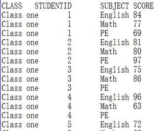
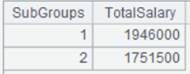
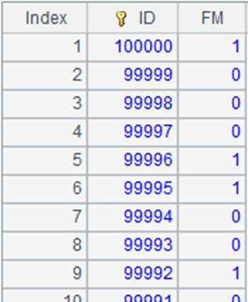

Description:
Find the record(s) according to the specified primary key value(s) from a memory table.
Syntax:
T.find(k,…)
Note:
The function finds records where the primary key value is k from memory table T.Use binary search if there isn’t an index.
Parameters:
|
T |
A memory table |
|
k |
The primary key; write multiple keys as a sequence |
Options:
|
@k |
Find multiple records according to multiple primay keys and return them as a record sequence; by default the function returns the first-found record whose primary key is k ; write multiple primary keys in the format of [[k1,k2],[...],...] |
Return value:
A record/record sequence
Example:
|
|
A |
|
|
1 |
=demo.cursor("select EID,NAME,GENDER from employee where EID< 10") |
Return a cursor |
|
2 |
=A1.memory() |
Return a memory table
|
|
3 |
=A2.keys(EID,NAME) |
Set EID and NAME as the keys of the memory table |
|
4 |
=A2.find([8,"Megan"]) |
The two primary keys are written as a sequence  |
|
5 |
=A2.keys(EID,GENDER) |
Set EID and GENDER as the keys of the memory table |
|
6 |
=A2.find@k([[8,"F"],[2,"F"]]) |
Use @k option to find multiple records  |
|
7 |
=A2.keys(EID) |
Set EID as the key of the memory table |
|
8 |
=A2.find(3) |
Find the record where EID is 3  |